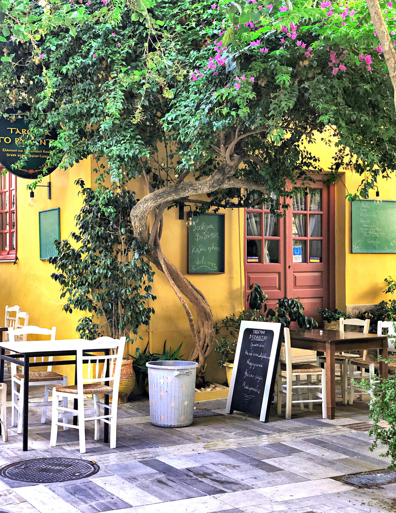

Living Epicurus Today
What is a 21st century Epicurean?
If you like reading about philosophy, here's a free, weekly newsletter with articles just like this one: Send it to me!
How can we live an Epicurean life in today’s world?
Of course, “today’s world” is many different places — the life of a Greek fisherman will not offer the same opportunities and challenges as that of a single mother software developer in Silicon Valley, a philosophy professor in Hong Kong, or a bus driver in rural Alaska. Still, as long as we are talking about the Western (or West-influenced), capitalist world, there are some common tropes that we can identify as typical for a life roughly “like ours.”
The Queen’s cook
Here is the thing: A few days ago, Youtube recommended me the channel of someone who had once been the cook of the Queen of England (Youtube link). One would think that the Queen and her royal household must eat all the crazy, expensive, exquisite food that we normal people cannot afford. But watching this channel, one is confronted with Prince Harry’s love of macaroni and cheese, the Queen’s fondness for a small slice of chocolate cake on her birthday, and Princess Diana’s favourite bread and butter pudding. After watching a few of those videos, the kids made me bake them the Queen’s afternoon tea scones, and then we had our afternoon milk with the exact same scones the monarch would probably have just a few hours later in her GMT time zone.
I thought that this was a powerful demonstration of how egalitarian Western capitalism is — and how it isn’t.

Yes, the Queen eats the same dishes that we do and Prince Harry liked mac and cheese just as much as my kids do. But when we look closer, the differences become apparent: the Queen’s food is cooked almost exclusively from organic veggies that they grow in the Queen’s gardens, meat from the royal deer, and presumably fish from the royal rivers. We get our meat from the supermarket freezer and, if we’re lucky, we find some that’s imported from New Zealand. We refuse to buy strawberries out of season, and we’d never pay for those obscenely huge ones chemically grown and shipped from California. The highlight of our desserts calendar are the few weeks in winter (yes, at our place December is the strawberry season!) when we can go and pick our own strawberries at a local farm. And we are the privileged ones. If we were poorer, we couldn’t afford to pick our own fruit, which, perversely, costs more than the stuff flown halfway around the world. We would have to get it from the supermarket like most people do: sprayed, hormon-stuffed, packaged, canned, plastic-wrapped and whisked across the Pacific in a fossil-fuel guzzling airplane.

Stephanie Mills: Epicurean Simplicity
In her book “Epicurean Simplicity,” author and activist Stephanie Mills analyses what is wrong with our modern way of life.
Natural food
Thinking about this, I realised that it’s not the imported food that’s the sign of true privilege nowadays, but often the local, organic produce. The less affluent among us eat steaks from Brazil and fish fillets from Vietnam, while the well-off get to enjoy organic ingredients from their local artisan food boutique. The Queen then, symbolic apex of wealth, is not distinguished by being served caviar and foie gras, but by simply eating what grows on her own land, not more than a stone’s throw from the palace’s walls. The working class, meanwhile, get to eat the instant Kraft mac and cheese from the supermarket shelf, the tins of Chinese tomatoes, the canned tuna from the West coast of India.
Epicurus thought that the easiest way to lead a happy life was to focus on one’s natural needs — and the natural ways of satisfying them.
“Whatever is natural,” he writes, “is easily procured and only the vain and worthless hard to win.” (Letter to Menoeceus)
One can imagine that to be true in ancient Athens, a warm, fertile place, a small town by today’s standards, surrounded by orchards, olive groves and a fish-filled sea. But is it true today?
On the one hand, the Queen eats her own organic berries from the grounds of Windsor Castle (or wherever they grow them) — on the other, many studies have found that “low-income neighborhoods offer greater access to food sources that promote unhealthy eating.”1 In our societies, so-called “fast food” is easier to procure, to use Epicurus’ words, than proper, natural food.
So has Epicurean living become so expensive today as to exclude most of us from practising it? Does one need to be rich in order to be able to afford the simple life?
There’s a second thought related to this one, and it is a more hopeful one. If it is, indeed, true that local and natural foods are the new mark of wealth and privilege, then we must look for the truly privileged not in the boardrooms of banks and the showrooms of the latest Tesla or Rolls-Royce models; but we must seek them among those who still have not lost their original contact with a life closer to nature.

Photo by Despina Galani on Unsplash
Makis is a Greek villager, owner of a tavern where we always spend our holidays. He lives in his tavern (and above it), and, even more than the Queen of England (who, honestly, doesn’t seem to have the happiest family life, all things considered), he spends his days surrounded by his family: his kids serve at the tables in their breaks from homework, his wife is the kitchen chef, and his mother and cousin are helping out to prepare the ingredients and wash the dishes. Makis himself operates the grill, but most of the time he just sits at one of the tables, chatting with the guests. Behind the tavern begin his own fields, in which he grows all the vegetables he needs, all through the summer. In Makis tavern, you won’t get a chicken steak from China. You can watch tomorrow’s main dish pick worms out of the soil as you eat, and if you ask nicely, Makis will invite you to his fields, where he grows with his own hands everything that he serves in his tavern.
Makis the villager, Epicurus would say, is really just as privileged as the Queen of England (if not more, since his life is a lot freer and more self-determined than hers). So, true affluence, true luxury forms a circle, and the two ends of the scale of privilege meet just at the point where the circle closes: the villager and the Queen both have free access to what eludes most of us: the fruits of the Earth, healthy, organic, local produce, not destroyed and poisoned, free of radiation and genetic manipulation. It is the workers, the employed, the office people, the ostensibly wealthy middle class, who are the losers in this game. Those who have no choice but to eat what they are given by a system that they cannot control, a system that is made to maximise the profit of others rather than to serve their own interests.
Epicurean complexity
We’ve talked about Stephanie Mills’ book “Epicurean Simplicity” earlier in this series.
Stephanie Mills, too, advocates a life away from the feverish stress of the cities and back towards a more natural, more quiet existence, in harmony with the rhythms of the plant and animal worlds; a place where what is natural is, once again, “easy to procure, and only the vain and worthless hard to win.”

Here is Stephanie Mills’ book “Epicurean Simplicity.” It is a tender meditation on what makes life worth living and a declaration of love to nature and to life.
Amazon affiliate link. If you buy through this link, Daily Philosophy will get a small commission at no cost to you. Thanks!
A similar thought applies to friendships. Our technological world has made a mess of human relations. I have, for the past two years, spoken with other people (with the exception of my family) almost exclusively over the Internet. When Daniel Klein went to a Greek island in search of the lost Epicurean life, it was not so much the blue sea and the peaceful countryside, but the human contact between the locals, their relationships and friendships that impressed and attracted him the most.
So how can we live a more Epicurean life in today’s world?
It seems that it boils down to two things. First, we must resist the frantic consumerist life and our systems of food distribution that cause nutritionally worthless and harmful food to be available easier and cheaper than what is natural and healthy. Resisting fast food and supermarket chains does not mean that one would have to spend an inordinate amount of money on overpriced organic fads and fashions. A self-baked loaf of bread from normal supermarket flour is already a big step forward: just read the list of ingredients on any package of supermarket bread to see what you’d be avoiding, not to mention all the environmental costs from packaging and transport for that loaf of bread. And cooking one’s own food also improves one’s skills and boosts one’s satisfaction from everyday tasks. Instead of a day spent staring at your iPhone, consider a walk in the park. Instead of a weekend watching TV, consider a hike to a scenic location close to your home and a picnic in nature.

Daniel Klein: Travels with Epicurus.
A wonderfully human meditation on old age. A man travels to a Greek island with a suitcase full of books, in search of a better, more dignified way to age.
Amazon affiliate link. If you buy through this link, Daily Philosophy will get a small commission at no cost to you. Thanks!
Second, Epicurus would emphasise our relationships to our friends. For a happy life, he’d see it as essential that we engage with others in a real way, not through a Facebook click or through a quick WhatsApp message, but by participating in other people’s lives on a much deeper and more meaningful level. If Covid poses a problem with in-person meetings, why not try writing a letter? No inspiration? How about exploring some of the great letter-writers of the past and getting some ideas from them?
One can find all kinds of letters from nearly everyone in the past on the shelves of today’s bookshops: from the letters of JRR Tolkien and the letters of CS Lewis to children, to the letters of writers Graham Greene and F Scott Fitzgerald, to the now classic and often brilliant letters of Oscar Wilde.
Not everyone can drop their life and relocate to the Greek countryside to live like Makis in his tavern. But with a few small changes that are within reach for most of us, we can still reclaim much of that natural life and its pleasures. We can move our lives one step closer to that ideal, Epicurean life of deep happiness and a peace that’s free of the “vain and worthless desires” that our world imposes on us.
Your ad-blocker ate the form? Just click here to subscribe!
Return to The Ultimate Guide to Epicurus.
◊ ◊ ◊
Thanks for reading! Do you agree with Epicurus? Have you found other ways of improving your life in some way that you’d like to tell us about? I’d love to hear from you. Just leave a comment below!
Image by Bernard Hermant on Unsplash.